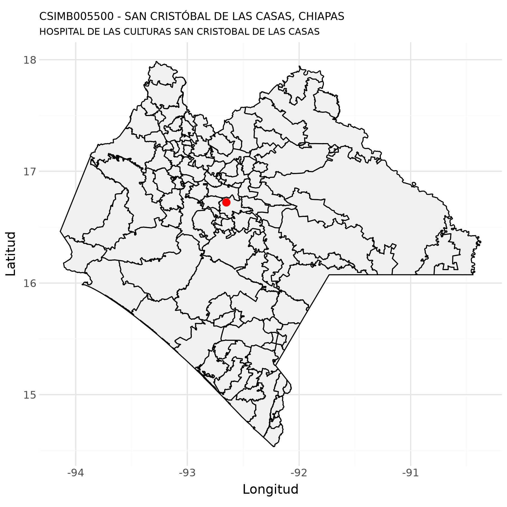
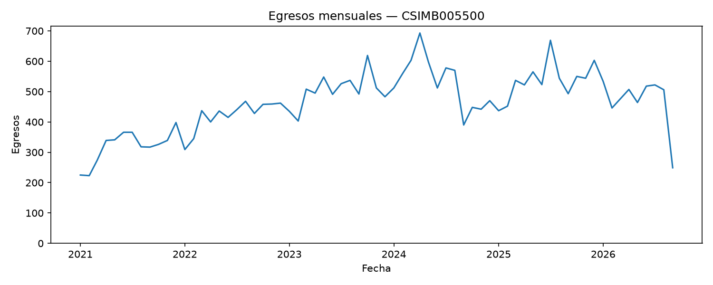
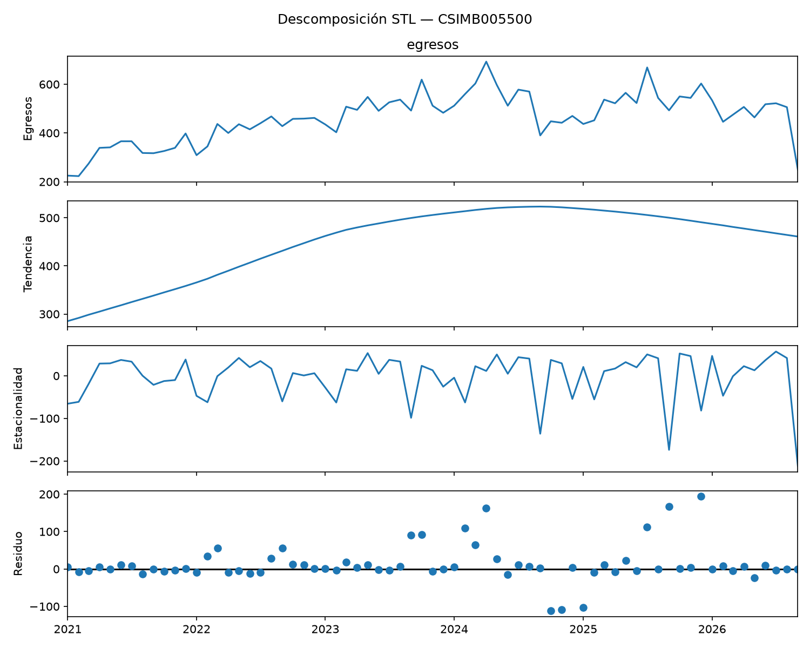
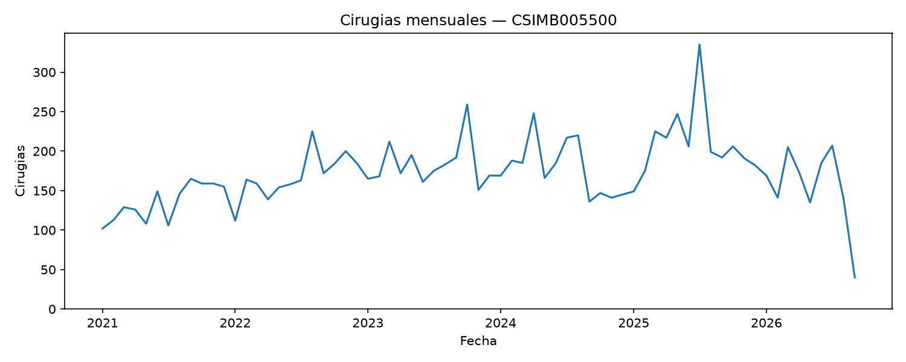
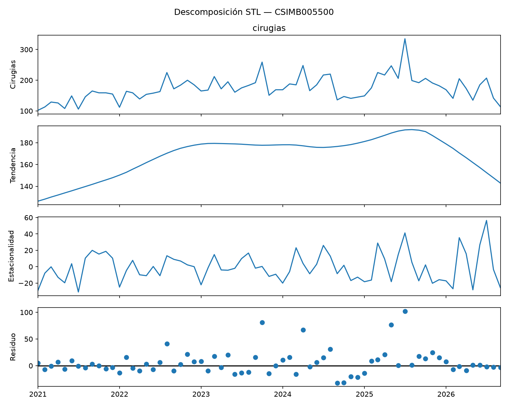
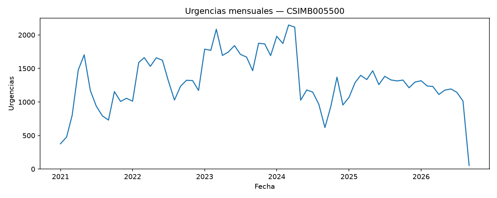
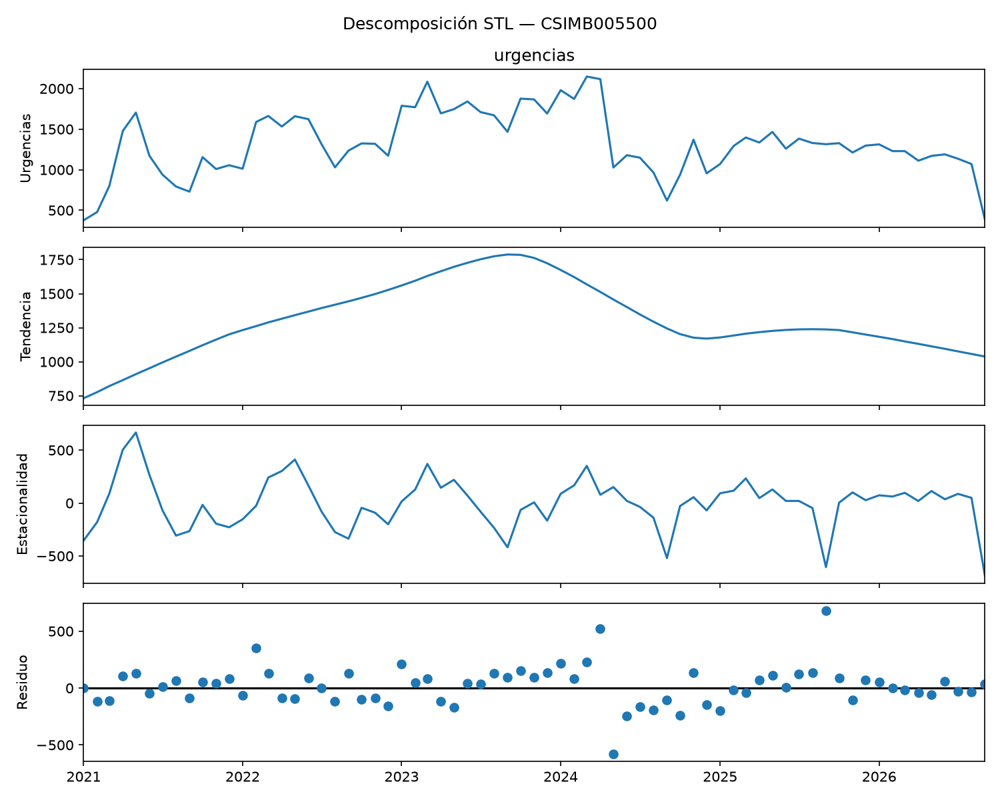

Datos de unidades de salud del IMSS Bienestar
HOSPITAL DE LAS CULTURAS SAN CRISTOBAL DE LAS CASAS - CSIMB005500
5 de octubre de 2026
Luis
M. González

Datos generales
Con base en (Secretaría de Salud - DGIS, 23 de septiembre de 2026)
| Nombre de la unidad: | HOSPITAL DE LAS CULTURAS SAN CRISTOBAL DE LAS CASAS |
| CLUES: | CSIMB005500 |
| Nivel de atención: | SEGUNDO NIVEL |
| Tipología: | HOSPITAL GENERAL |
| Subtipología: | NO ESPECIFICADO |
| Tipo de establecimiento: | HOSPITALIZACIÓN |
| Estrato: | URBANO |
| Estatus: | EN OPERACIÓN |
| Región: | SURESTE |
| Entidad: | CHIAPAS |
| Municipio: | SAN CRISTÓBAL DE LAS CASAS |
| Localidad: | SAN CRISTÓBAL DE LAS CASAS |
| Coordenadas: | 16.723703, -92.652269 |
| Domicilio: | BOULEVARD JAVIER LÓPEZ MORENO No. SIN NÚMERO |
| BARRIO FÁTIMA | |
| SAN CRISTÓBAL DE LAS CASAS, CHP | |
| CP 29264 | |
| Fecha de construcción: | 2008-12-07 |
| Fecha de inicio de operación: | 2010-06-16 |
| Propiedad del inmueble: | PROPIO |
| Último movimiento: | ALTA |
| Fecha del último movimiento: | 2024-07-18 |
Mapa

Recursos humanos
Fecha de última actualización en SINERHIAS:
2026-08-06 (Secretaría de Salud - DGIS, 14 de
agosto de 2026)
Totales
| Plazas | Totales | Ocupadas | Desocupadas |
|---|---|---|---|
| Médicos: | 151 | 151 | 0 |
| Médicos en adiestramiento: | 31 | 31 | 0 |
| Médicos en otras actividades: | 28 | 28 | 0 |
| Enfermeras: | 311 | 311 | 0 |
| Enfermeras en otras actividades: | 25 | 25 | 0 |
| Otro personal profesional: | 67 | 67 | 0 |
| Personal técnico: | 67 | 67 | 0 |
| Otro personal: | 140 | 140 | 0 |
| Total recursos humanos: | 820 | 820 | 0 |
Médicos
| Plazas | Totales | Ocupadas | Desocupadas |
|---|---|---|---|
| Médicos generales: | 59 | 59 | 0 |
| Pediatras: | 14 | 14 | 0 |
| Ginecoobstetras: | 1 | 1 | 0 |
| Cirujanos: | 14 | 14 | 0 |
| Internistas: | 15 | 15 | 0 |
| Oftalmólogos: | 1 | 1 | 0 |
| Otorrinolaringólogos: | 2 | 2 | 0 |
| Traumatólogos: | 10 | 10 | 0 |
| Anestesiólogos: | 15 | 15 | 0 |
| Odontólogos: | 1 | 1 | 0 |
| Urólogos: | 1 | 1 | 0 |
| Cirujanos plásticos: | 1 | 1 | 0 |
| Neumólogos: | 1 | 1 | 0 |
| Urgenciólogos: | 8 | 8 | 0 |
| Nefrólogos: | 2 | 2 | 0 |
| Radiólogos: | 2 | 2 | 0 |
| Otros médicos: | 4 | 4 | 0 |
| Total médicos: | 151 | 151 | 0 |
Médicos en adiestramiento
| Plazas | Totales | Ocupadas | Desocupadas |
|---|---|---|---|
| Médicos internos de pregrado: | 20 | 20 | 0 |
| Médicos residentes: | 11 | 11 | 0 |
| Médicos en adiestramiento: | 31 | 31 | 0 |
Médicos en otras actividades
| Plazas | Totales | Ocupadas | Desocupadas |
|---|---|---|---|
| Médicos en labores administrativas: | 23 | 23 | 0 |
| Médicos en enseñanza e investigacion: | 1 | 1 | 0 |
| Médicos epidemiólogos: | 2 | 2 | 0 |
| Total médicos en otras actividades: | 28 | 28 | 0 |
Enfermeras
| Plazas | Totales | Ocupadas | Desocupadas |
|---|---|---|---|
| Enfermeras generales: | 183 | 183 | 0 |
| Enfermeras especialistas: | 27 | 27 | 0 |
| Enfermeras pasantes: | 52 | 52 | 0 |
| Enfermeras auxiliares: | 49 | 49 | 0 |
| Total enfermeras: | 311 | 311 | 0 |
Enfermeras en otras actividades
| Plazas | Totales | Ocupadas | Desocupadas |
|---|---|---|---|
| Enfermeras labores administrativas: | 24 | 24 | 0 |
| Enfermeras enseñanza o investigación: | 1 | 1 | 0 |
| Total enfermeras en otras actividades: | 25 | 25 | 0 |
Otro personal profesional
| Plazas | Totales | Ocupadas | Desocupadas |
|---|---|---|---|
| Químicos: | 22 | 22 | 0 |
| Trabajo social: | 17 | 17 | 0 |
| Farmacobiólogos: | 1 | 1 | 0 |
| Nutriólogos: | 13 | 13 | 0 |
| Psicólogos: | 10 | 10 | 0 |
| Ingenieros biomédicos: | 3 | 3 | 0 |
| Otros: | 1 | 1 | 0 |
| Total otro personal profesional: | 67 | 67 | 0 |
Personal técnico
| Plazas | Totales | Ocupadas | Desocupadas |
|---|---|---|---|
| Trabajo social: | 6 | 6 | 0 |
| Laboratorio: | 40 | 40 | 0 |
| Rehabilitación física: | 2 | 2 | 0 |
| Radiología: | 12 | 12 | 0 |
| Promotor de salud: | 2 | 2 | 0 |
| Citotecnología: | 1 | 1 | 0 |
| Banco de sangre: | 4 | 4 | 0 |
| Total personal técnico: | 67 | 67 | 0 |
Otro personal
| Plazas | Totales | Ocupadas | Desocupadas |
|---|---|---|---|
| Personal administrativo: | 68 | 68 | 0 |
| Archivo clínico: | 21 | 21 | 0 |
| Conservación y mantenimiento: | 7 | 7 | 0 |
| Intendencia: | 9 | 9 | 0 |
| Otro personal: | 35 | 35 | 0 |
| Total otro personal: | 140 | 140 | 0 |
Servicios médicos
Fecha de última actualización en SINERHIAS:
2026-08-06 (Secretaría de Salud - DGIS, 14 de
agosto de 2026)
Consulta externa básica
- Consulta externa básica: NO
Medicina preventiva y terapia de hidratación oral
- Servicio de medicina preventiva y terapia de hidratación oral: NO
- Salas de espera (familiares - pacientes): 0
- Capacidad en número de personas de las salas de espera: 0
- Laboratorio dental: NO
Consulta externa especialidades
- Consulta externa especialidades: SI
| Consultorios | Totales | Habilitados | Deshabilitados |
|---|---|---|---|
| Cirugía general: | 1 | 1 | 0 |
| Medicina interna: | 2 | 2 | 0 |
| Nefrología: | 1 | 1 | 0 |
| Oftalmología: | 1 | 1 | 0 |
| Otorrinolaringología: | 1 | 1 | 0 |
| Pediatría: | 1 | 1 | 0 |
| Urología: | 1 | 1 | 0 |
| Traumatología: | 1 | 1 | 0 |
| Otras especialidades: | 1 | 1 | 0 |
| Total consultorios de especialidad: | 10 | 10 | 0 |
Urgencias
- Área de urgencias: SI
- Área de curaciones: SI
| Áreas específicas | Totales | Habilitados | Deshabilitados |
|---|---|---|---|
| Camas en área de urgencias: | 17 | 17 | 0 |
| Salas de choque: | 1 | 1 | 0 |
| Camas en área de observación: | 18 | 18 | 0 |
Tocología y tococirugía
- Área de tocología y tococirugía: NO
Neonatologia y cuneros
- Área de neonatología y cuneros: NO
- Banco de leche: NO
Hospitalización
- Área de hospitalización: SI
- Área de trabajo de enfermería: SI
- Salas de espera (familiares - pacientes) : 1
- Capacidad en número de personas de las salas de espera: 12
| Camas | Totales | Habilitados | Deshabilitados |
|---|---|---|---|
| Camas de aislados: | 7 | 7 | 0 |
| Camas de cirugía general y reconstructiva: | 16 | 16 | 0 |
| Camas de medicina interna: | 14 | 14 | 0 |
| Camas de pediatría: | 9 | 9 | 0 |
| Camas de traumatología: | 14 | 14 | 0 |
| Total camas censables: | 60 | 60 | 0 |
Unidad quirúrgica
- Área de unidad quirúrgica: SI
| Quirófanos | Totales | Habilitados | Deshabilitados |
|---|---|---|---|
| Salas de operación: | 3 | 3 | 0 |
Recuperación postquirúrgica
- Área de recuperación postquirúrgica: SI
| Camas | Totales | Habilitados | Deshabilitados |
|---|---|---|---|
| Camas de recuperación postquirurgica: | 6 | 6 | 0 |
Unidad de cuidados intensivos
- Área de unidad de cuidados intensivos: SI
- Área de unidad de cuidados intensivos neonatales: NO
| Camas | Totales | Habilitados | Deshabilitados |
|---|---|---|---|
| Camas de terapia intensiva adultos: | 6 | 4 | 2 |
| Camas de terapia intensiva pediátricas: | 6 | 6 | 0 |
Unidad de cuidados intermedios
- Área de unidad de cuidados intermedios: NO
Cuidados coronarios
- Área de cuidados coronarios: NO
Terapias
- Área de inhaloterapia: SI
- Área de medicina física y rehabilitación: SI
- Área de hidroterapia: NO
- Área de electroterapia: NO
- Área de mecanoterapia: SI
- Área de termoterapia: NO
Unidad de cirugía ambulatoria
- Área de unidad de cirugía ambulatoria: NO
- Área de recuperación de cirugía ambulatoria: NO
Hemodiálisis
- Área de hemodiálisis: SI
Centrales de enfermería
- Centrales de enfermería: NO
Planta de tratamiento de agua
- Planta de tratamiento de agua: NO
Unidad de terapia oncológica
- Unidad de terapia oncológica: NO
- Área de radioterapia externa: NO
- Área de braquiterapia_alta tasa: NO
- Área de braquiterapia baja tasa: NO
- Área de quimioterapia: NO
- Cuarto caliente: NO
- Bunker: NO
- Cuarto de revelado: NO
- Área de preparación de medicamentos: NO
- Área de trabajo de enfermería: NO
- Área de guarda de medicamentos: NO
Unidad de quemados
- Área de unidad de quemados: NO
Unidad transplante de médula ósea
- Área de unidad de transplante de médula ósea: NO
Otros servicios médicos
- Área de hematología: NO
- Sistema de flujo laminar: NO
- Área de preparación de alimentos: NO
- Sistema de intercomunicación: NO
- Área de clínica de medicina hiperbárica,: NO
- Área de imagenología,: SI
- Área de urodinámia: NO
- Área de hemodinámia: NO
- Área de medicina nuclear: NO
- Área de laboratorio clínico: SI
- Área de laboratorio de microbiología: SI
- Área de laboratorio de radioinmunoensayo: NO
- Área de anatomía patológica: SI
Servicios de apoyo
Fecha de última actualización en SINERHIAS:
2026-08-06 (Secretaría de Salud - DGIS, 14 de
agosto de 2026)
Ambulancias
| Ambulancias | Totales | Habilitados | Deshabilitados |
|---|---|---|---|
| Ambulancias: | 2 | 2 | 0 |
| Ambulancias cuidados intensivos: | 1 | 1 | 0 |
Área de banco de sangre
- Área de banco de sangre: NO
- Capacidad de almacenamiento: 0
- Laboratorio de banco sangre: NO
Otros servicios de apoyo
- Área CEyE: SI
- Área centro de mezclas: NO
- Número de centros de mezclas: 0
- Área de farmacia: SI
- Área de ingeniería biomédica: SI
Servicios generales
Fecha de última actualización en SINERHIAS:
2026-08-06 (Secretaría de Salud - DGIS, 14 de
agosto de 2026)
- Almacén general: SI
- Casa de máquinas: SI
- Calderas: SI
- Subestación: SI
- Planta de emergencia: SI
- Talleres de reparación: SI
- Cocina: SI
- Comedor: SI
- Central de gases medicinales: SI
- Compresoras: SI
- Aire acondicionado: SI
- Servicios de intendencia: SI
- Roperia: SI
- Lavandería: SI
- Servicio de mensajería: NO
- Servicio de vigilancia: SI
- Servicio de fotocopiado: SI
- Tratamiento de residuos sólidos: NO
- Tratamiento de aguas residuales: NO
- Almacénn temporal de residuos peigrosos, biólogicos o infecciosos: SI
- Almacén de productos CRETI:1 NO
- Incinerador: NO
- Sistema de desechos líquidos: NO
- Almacén de medicamentos: SI
- Cámara fría para resguardo de insumos para la salud: NO
- Cámaras frías fabricadas con paneles: 0
- Cámaras frias de concreto: 0
Infraestructura
Fecha de última actualización en SINERHIAS:
2026-08-06 (Secretaría de Salud - DGIS, 14 de
agosto de 2026)
- Agua
- Servicio de agua potable: SI
- Red municipal de abastecimiento de agua: SI
- Pozo de agua: NO
- Almacenamiento de agua por cisterna: SI
- Otra fuente de abastecimiento de agua: NO
- Energía eléctrica
- Servicio de energía eléctrica: SI
- Instalación de energía eléctrica: SI
- Sistema de paneles solares: NO
- Tierra física: SI
- Pararayos: SI
- Drenaje
- Sistema de drenaje: SI
- Fosa séptica: NO
- Gas
- Servicio de gas (tanque estacionario, natural, otro): SI
- Baños
- Baños públicos (inodoros y mingitorios): 16
- Baños para el personal (inodoros y mingitorio): 53
- Baños para pacientes (inodoros y mingitorio): 23
- Baños para discapacitados (inodoro): 5
- Radio CB
- Radio de banda civil: NO
- Telesalud
- Área específica de telesalud: NO
- Estación para telemedicina-telesalud: NO
- Ancho de banda disponible para servicio de telesalud: NO TIENE
- Equipo de videoconferencia: SI
- Equipo de cómputo específico para telesalud: NO
- Software para telemedicna-telesalud: NO
- Expediente clínico electrónico
- Expediente clínico electrónico: NO
- Nombre del expediente clínico electrónico: NO TIENE
- Infraestructura
- Metros cuadrados de terreno: 23701
- Metros cuadrados de construcción: 8760
- Metros cuadrados de superficie exterior: 18792
- Metros cuadrados de superficie jardinada: 7523
- Número de edificios que conforman el establecimiento: 3
- Número de Niveles que tiene el establecimiento: 1
- Computadoras
- Computadoras funcionales (laptops y PC): 120
- Consultorios con computadora funcional: 13
- Computadoras funcionales en la dirección: 0
- Computadoras funcionales en la farmacia: 3
- Computadoras funcionales en el área de estadística: 5
- Computadoras funcionales en el área de informática: 0
- Internet
- Tipo de conexión a internet: INTERNET DE CABLE (FIBRA OPTICA , CABLE COAXIAL)
- Ancho de banda: 1 A 50 MB
- Número de usuarios por conexión de internet: 120
- Internet pagado por: SECRETARIA DE SALUD ESTATAL
- Internet en la dirección: SI
- Internet en la farmacia: SI
- Internet en el área de estadística: SI
- Internet en el área de informática: NO
- Número de consultorios con internet: 13
Equipamiento médico
Con base en SINERHIAS: (Secretaría de Salud - DGIS, 14 de agosto de 2026)
Equipos de alto costo
| Equipo | ¿Funciona? | Procedimientos diarios | Actualización |
|---|---|---|---|
| MASTOGRAFO ANALOGICO CON DIGITALIZADOR (CR) | SI | 17 | 2025-04-30 |
| RESONANCIA MAGNETICA DE 1.5 TESLAS | SI | 1 | 2026-01-27 |
| TOMOGRAFO MENOR A 16 CORTES | SI | 148 | 2025-04-30 |
Equipamiento médico (concentrado)
| Equipo | Funcionando | Fuera de servicio | Total |
|---|---|---|---|
| ANALIZADOR DE LA COAGULACION (COAGULOMETRO) | 1 | 0 | 1 |
| ANALIZADOR DE QUIMICA CLINICA | 1 | 1 | 2 |
| ASPIRADOR DE SUCCION REGULABLE (DE PARED) | 69 | 0 | 69 |
| ASPIRADOR PORTATIL DE SUCCION CONTINUA | 2 | 0 | 2 |
| AUDIOMETRO | 1 | 0 | 1 |
| BASCULA CON ESTADIMETRO | 2 | 0 | 2 |
| BASCULA ELECTRONICA PARA SILLA DE RUEDAS | 1 | 0 | 1 |
| BASCULA PARA BEBE | 1 | 0 | 1 |
| BOMBA DE INFUSION VOLUMETRICA | 149 | 0 | 149 |
| BRONCOSCOPIO | 1 | 0 | 1 |
| CAMARA SONOAMORTIGUADA | 1 | 0 | 1 |
| CAMILLA RADIOTRANSPARENTE | 4 | 1 | 5 |
| CAMPANA DE BIOSEGURIDAD | 1 | 0 | 1 |
| CAMPIMETRO | 1 | 0 | 1 |
| CARRO ROJO CON DESFIBRILADOR MONITOR Y EQUIPO DE REANIMACION | 12 | 0 | 12 |
| COLPOSCOPIO | 1 | 0 | 1 |
| DENSITOMETRO OSEO DE CUERPO ENTERO | 1 | 0 | 1 |
| DESFIBRILADOR CON MONITOR | 2 | 0 | 2 |
| ELECTROCARDIOGRAFO | 5 | 1 | 6 |
| EQUIPO DE HEMOFILTRACION PARA TERAPIA RENAL CONTINUA | 4 | 0 | 4 |
| EQUIPO DE OSMOSIS INVERSA PORTATIL | 1 | 0 | 1 |
| ESFIGMOMANOMETRO ANEROIDE | 16 | 0 | 16 |
| ESFIGMOMANOMETRO ELECTRONICO | 1 | 0 | 1 |
| ESPIROMETRO | 4 | 0 | 4 |
| ESTERILIZADOR DE VAPOR | 1 | 1 | 2 |
| ESTETOSCOPIO BIAURICULAR | 16 | 0 | 16 |
| ESTUCHE DE DIAGNOSTICO COMPLETO (OFTALMOSCOPIO Y OTOSCOPIO) | 2 | 0 | 2 |
| ESTUFA BACTERIOLOGICA | 1 | 1 | 2 |
| HUMIFICADOR | 13 | 0 | 13 |
| IMPEDANCIOMETRO | 1 | 0 | 1 |
| INCUBADORA DE TRASLADO | 0 | 1 | 1 |
| LAMPARA DE HAZ DIRECCIONABLE | 3 | 0 | 3 |
| LAMPARA DE HENDIDURA | 1 | 1 | 2 |
| LAMPARA QUIRURGICA DOBLE | 3 | 0 | 3 |
| LAMPARA QUIRURGICA PORTATIL PARA EMERGENCIA | 5 | 1 | 6 |
| LAMPARA QUIRURGICA SENCILLA | 2 | 0 | 2 |
| LECTOR DE HEMATOCRITO | 1 | 0 | 1 |
| MESA DE EXPLORACION GENERAL | 1 | 0 | 1 |
| MESA QUIRURGICA | 4 | 1 | 5 |
| MICROSCOPIO BASICO DE RUTINA | 1 | 0 | 1 |
| MICROSCOPIO PARA OFTALMOCIRUGIA | 1 | 0 | 1 |
| MONITOR DE SIGNOS VITALES AVANZADO (ECG, PANI. SPO2, TEMP,PRESION INVASIVA, CO2, GASTO CARDIACO, RELAJACION NEUROMUSCULA | 13 | 0 | 13 |
| MONITOR DE SIGNOS VITALES BASICO (ECG, PANI. SPO2, TEMP) | 35 | 0 | 35 |
| MONITOR DE SIGNOS VITALES DE TRASLADO | 1 | 0 | 1 |
| NEGATOSCOPIO | 6 | 0 | 6 |
| OXIMETRO DE PULSO CON DESPLIEGUE DE CURVA DE PLETISMOGRAFIA | 4 | 0 | 4 |
| REANIMADOR MANUAL | 1 | 0 | 1 |
| REFRIGERADOR DE FARMACIA | 1 | 2 | 3 |
| REFRIGERADOR PARA LABORATORIO CLINICO | 4 | 0 | 4 |
| RESPIRADOR DE ASISTENCIA VENTILATORIA(E30) | 4 | 0 | 4 |
| SISTEMA DE HEMODIALISIS PARA SU USO PEDIATRICO Y ADULTO | 4 | 0 | 4 |
| SISTEMA INMOVILIZACION | 3 | 0 | 3 |
| SISTEMAS DE ARCHIVO Y COMUNICACION DE IMAGENES (PACS) | 1 | 0 | 1 |
| TONOMETRO OFTALMICO | 0 | 1 | 1 |
| TORNIQUETE NEUMATICO | 1 | 0 | 1 |
| ULTRASONIDO DE DIAGNOSTICO | 3 | 1 | 4 |
| UNIDAD DE ANESTESIA BASICA | 1 | 0 | 1 |
| UNIDAD DE ANESTESIA INTERMEDIA | 3 | 0 | 3 |
| UNIDAD DE ELECTROCIRUGIA GENERAL | 3 | 0 | 3 |
| UNIDAD DE OTORRINOLARINGOLOGIA | 1 | 0 | 1 |
| UNIDAD DE POTENCIALES EVOCADOS | 0 | 1 | 1 |
| UNIDAD RADIOLOGICA DE PROPOSITO GENERAL (ANALOGICO) | 1 | 0 | 1 |
| UNIDAD RADIOLOGICA PORTATIL ANALOGICA (EQUIPO PORTATIL DE RAYOS X) | 2 | 0 | 2 |
| UNIDAD RADIOLOGICA PORTATIL DIGITAL (EQUIPO PORTATIL DE RAYOS X) | 2 | 1 | 3 |
| VENTILADOR ADULTO - PEDIATRICO - NEONATAL | 22 | 13 | 35 |
| VENTILADOR DE TRASLADO PEDIATRICO - ADULTO | 3 | 0 | 3 |
| VENTILADOR DE TRASLADO PEDIATRICO-ADULTO | 1 | 0 | 1 |
Egresos hospitalarios
Con base en (Secretaría de Salud - DGIS, 05 de octubre de 2026a)
Número de egresos
| Año | Egresos |
|---|---|
| 2021 | 3,832 |
| 2022 | 5,057 |
| 2023 | 6,049 |
| 2024 | 6,375 |
| 2025 | 6,439 |
| 2026 | 4,459 |


Top 20 de afecciones principales
| Posición | Afección principal | Egresos |
|---|---|---|
| 1 | COLECISTITIS CRÓNICA | 230 |
| 2 | TRAUMATISMOS MÚLTIPLES, NO ESPECIFICADOS | 188 |
| 3 | NEUMONÍA BACTERIANA, NO ESPECIFICADA | 182 |
| 4 | TRAUMATISMO DE LA CABEZA, NO ESPECIFICADO | 182 |
| 5 | GASTROENTERITIS Y COLITIS DE ORIGEN NO ESPECIFICADO | 166 |
| 6 | OTRAS APENDICITIS AGUDAS, Y LAS NO ESPECIFICADAS | 163 |
| 7 | EPILEPSIA, TIPO NO ESPECIFICADO | 145 |
| 8 | ENFERMEDAD RENAL CRÓNICA, ETAPA 5 | 128 |
| 9 | INSUFICIENCIA VENOSA (CRÓNICA) (PERIFÉRICA) | 99 |
| 10 | INFECCIÓN DE VÍAS URINARIAS, SITIO NO ESPECIFICADO | 97 |
| 11 | ENFERMEDAD RENAL CRÓNICA, NO ESPECIFICADA | 96 |
| 12 | DIABETES MELLITUS TIPO 2, CON COMPLICACIONES NO ESPECIFICADAS | 90 |
| 13 | HIPERTENSIÓN ESENCIAL (PRIMARIA) | 88 |
| 14 | INFECCIÓN LOCAL DE LA PIEL Y DEL TEJIDO SUBCUTÁNEO, NO ESPECIFICADA | 87 |
| 15 | HEMATEMESIS | 76 |
| 16 | TRAUMATISMO INTRACRANEAL, NO ESPECIFICADO | 70 |
| 17 | FRACTURA DE LA EPÍFISIS SUPERIOR DE LA TIBIA | 68 |
| 18 | OTRAS OBSTRUCCIONES INTESTINALES Y LAS NO ESPECIFICADAS | 62 |
| 19 | CONSOLIDACIÓN DEFECTUOSA DE FRACTURA | 59 |
| 20 | OTRAS GASTROENTERITIS Y COLITIS DE ORIGEN INFECCIOSO | 55 |
| 21 | OTROS | 3,824 |
Servicios de ingreso
| Posición | Servicio de ingreso | Egresos |
|---|---|---|
| 1 | MEDICINA INTERNA | 2,944 |
| 2 | CIRUGÍA GENERAL | 1,221 |
| 3 | PEDIATRÍA | 906 |
| 4 | TRAUMATOLOGÍA | 613 |
| 5 | UNIDAD DE TERAPIA INTENSIVA PEDIÁTRICA | 165 |
| 6 | UNIDAD DE TERAPIA INTENSIVA | 133 |
| 7 | NO APLICA | 110 |
| 8 | OFTALMOLOGÍA | 29 |
| 9 | OTORRINOLARINGOLOGÍA | 27 |
| 10 | NEUROCIRUGÍA | 4 |
| 11 | OTROS | 3 |
Servicios de egreso
| Posición | Servicio de egreso | Egresos |
|---|---|---|
| 1 | MEDICINA INTERNA | 2,930 |
| 2 | CIRUGÍA GENERAL | 1,414 |
| 3 | PEDIATRÍA | 1,016 |
| 4 | TRAUMATOLOGÍA | 640 |
| 5 | UNIDAD DE TERAPIA INTENSIVA PEDIÁTRICA | 50 |
| 6 | UNIDAD DE TERAPIA INTENSIVA | 37 |
| 7 | OFTALMOLOGÍA | 31 |
| 8 | OTORRINOLARINGOLOGÍA | 26 |
| 9 | NEUROCIRUGÍA | 6 |
| 10 | UNIDAD DE TERAPIA INTERMEDIA | 2 |
| 11 | OTROS | 3 |
Procedencia
| Posición | Procedencia | Egresos |
|---|---|---|
| 1 | URGENCIAS | 5,159 |
| 2 | CONSULTA EXTERNA | 626 |
| 3 | REFERIDO | 244 |
| 4 | OTRO | 126 |
Motivo de egreso
| Posición | Motivo de egreso | Egresos |
|---|---|---|
| 1 | MEJORÍA | 5,205 |
| 2 | VOLUNTARIO | 505 |
| 3 | DEFUNCIÓN | 299 |
| 4 | TRASLADO A OTRA UNIDAD | 134 |
| 5 | OTRO | 8 |
| 6 | CURACIÓN | 2 |
| 7 | FUGA | 2 |
Número de procedimientos quirúrgicos
| Año | Cirugías |
|---|---|
| 2021 | 6,769 |
| 2022 | 10,078 |
| 2023 | 11,361 |
| 2024 | 11,734 |
| 2025 | 12,399 |
| 2026 | 6,771 |


Procedimientos quirúrgicos de egresos
| Posición | Procedimiento quirúrgico | Egresos |
|---|---|---|
| 1 | DESBRIDAMIENTO EXCISIONAL DE HERIDA, INFECCIÓN O QUEMADURA | 214 |
| 2 | OTRA APENDICECTOMÍA | 196 |
| 3 | COLECISTECTOMÍA | 157 |
| 4 | LAPAROTOMÍA EXPLORADORA | 139 |
| 5 | COLECISTECTOMÍA LAPAROSCÓPICA | 86 |
| 6 | REDUCCIÓN ABIERTA DE FRACTURA CON FIJACIÓN INTERNA. OTROS HUESOS ESPECÍFICOS | 76 |
| 7 | REDUCCIÓN ABIERTA DE FRACTURA CON FIJACIÓN INTERNA. TIBIA Y PERONÉ | 67 |
| 8 | OTRA INCISIÓN CON DRENAJE DE PIEL Y TEJIDO SUBCUTÁNEO | 60 |
| 9 | REPARACIÓN UNILATERAL DE HERNIA INGUINAL, NO ESPECIFICADA DE OTRA MANERA | 51 |
| 10 | OTRA EXCISIÓN DE VASOS, VENAS DE MIEMBROS INFERIORES | 51 |
| 11 | REDUCCIÓN ABIERTA DE FRACTURA CON FIJACIÓN INTERNA. RADIO Y CÚBITO | 48 |
| 12 | REDUCCIÓN ABIERTA DE FRACTURA CON FIJACIÓN INTERNA. FÉMUR | 48 |
| 13 | INYECCIÓN DE AGENTE ESCLEROSANTE EN VENA | 44 |
| 14 | OTRA EXTIRPACIÓN LOCAL O DESTRUCCIÓN DE LESIÓN O TEJIDO DE PIEL Y TEJIDO SUBCUTÁNEO | 40 |
| 15 | EXTRACCIÓN DE DISPOSITIVOS IMPLANTADOS EN EL HUESO, OTROS SITIOS ESPECIFICADOS | 31 |
| 16 | OTRAS CRANEOTOMÍAS | 28 |
| 17 | CONIZACIÓN | 27 |
| 18 | INCISIÓN DE INTESTINO, NO ESPECIFICADO DE OTRA MANERA | 26 |
| 19 | CORTE Y PREPARACIÓN DE INJERTOS DE PEDÍCULOS O COLGAJOS | 26 |
| 20 | OTRA HERNIORRAFIA UMBILICAL ABIERTA | 25 |
| 21 | OTROS | 730 |
Procedimientos terapeúticos de egresos
| Posición | Procedimiento terapéutico | Egresos |
|---|---|---|
| 1 | OTRA TRANSFUSIÓN DE SANGRE ENTERA | 312 |
| 2 | OTRA FISIOTERAPIA | 122 |
| 3 | CURACIÓN DE HERIDA | 87 |
| 4 | CATETERISMO VENOSO, NO CLASIFICADO BAJO OTRO CONCEPTO | 79 |
| 5 | INSERCIÓN DE TUBO ENDOTRAQUEAL | 76 |
| 6 | OTRO ENRIQUECIMIENTO POR OXÍGENO | 75 |
| 7 | HEMODIÁLISIS | 58 |
| 8 | PSICOTERAPIA VERBAL DE APOYO | 54 |
| 9 | MEDICACIÓN RESPIRATORIA ADMINISTRADA MEDIANTE NEBULIZADOR | 32 |
| 10 | OTRA IRRIGACIÓN DE HERIDA | 27 |
| 11 | APLICACIÓN DE FÉRULA | 26 |
| 12 | VENTILACIÓN MECÁNICA INVASIVA CONTINUA DE DURACIÓN NO ESPECIFICADA | 22 |
| 13 | RESUSCITACIÓN CARDIOPULMONAR, NO ESPECIFICADA DE OTRA MANERA | 22 |
| 14 | LITOTRICIA POR ONDAS DE CHOQUE EXTRACORPORALES DEL RIÑÓN, DEL URÉTER Y DE LA VEJIGA | 10 |
| 15 | INYECCIÓN DE ANTÍDOTO | 4 |
| 16 | OTRO MÉTODO ANTICONCEPTIVO ESPECIFICADO | 3 |
| 17 | TRANSFUSIÓN DE PLAQUETAS | 3 |
| 18 | EXTRACCIÓN DE CUERPO EXTRAÑO, NO ESPECIFICADO DE OTRA MANERA | 3 |
| 19 | LAVADO GÁSTRICO | 2 |
| 20 | CATETERISMO VENOSO PARA DIÁLISIS RENAL | 2 |
| 21 | OTROS | 17 |
Procedimientos de diagnóstico de egresos
| Posición | Procedimiento de diagnóstico | Egresos |
|---|---|---|
| 1 | EXAMEN MICROSCÓPICO DE SANGRE. OTRO EXAMEN MICROSCÓPICO | 3,641 |
| 2 | OTRAS RADIOGRAFÍAS DE ABDOMEN | 599 |
| 3 | OTRAS RADIOGRAFÍAS, NO ESPECIFICADAS | 507 |
| 4 | RADIOGRAFÍA TORÁCICA RUTINARIA, DESCRITA COMO TAL | 496 |
| 5 | OTRA RADIOGRAFÍA DE TEJIDO BLANDO DE CARA, CABEZA Y CUELLO | 297 |
| 6 | ULTRASONOGRAFIA DIAGNÓSTICA DEL ABDOMEN Y EL RETROPERITONEO | 232 |
| 7 | TOMOGRAFÍA AXIAL COMPUTARIZADA DE CABEZA | 222 |
| 8 | DETERMINACIÓN DE ESTADO MENTAL PSICOLÓGICO, NO ESPECIFICADA DE OTRA MANERA | 188 |
| 9 | ULTRASONOGRAFÍA DIAGNÓSTICA DEL APARATO URINARIO | 114 |
| 10 | RADIOGRAFÍA ÓSEA DEL MUSLO, LA RODILLA Y LA PIERNA INFERIOR | 79 |
| 11 | RADIOGRAFÍA ÓSEA DEL MIEMBRO SUPERIOR, NO ESPECIFICADA DE OTRA MANERA | 51 |
| 12 | ELECTROCARDIOGRAMA | 42 |
| 13 | OTRAS TOMOGRAFÍAS DE ABDOMEN | 39 |
| 14 | RADIOGRAFÍA ÓSEA DEL TOBILLO Y EL PIE | 34 |
| 15 | RADIOGRAFÍA ÓSEA DE LA MUÑECA Y LA MANO | 32 |
| 16 | DIÁLISIS PERITONEAL | 32 |
| 17 | OTRAS ULTRASONOGRAFÍAS DIAGNÓSTICAS | 26 |
| 18 | OTRA BIOPSIA CERVICAL | 25 |
| 19 | OTRA TOMOGRAFIA DE CABEZA | 17 |
| 20 | OTRAS TOMOGRAFÍAS DE TÓRAX | 17 |
| 21 | OTROS | 148 |
Urgencias
Con base en (Secretaría de Salud - DGIS, 05 de octubre de 2026b)
Número de urgencias
| Año | Urgencias |
|---|---|
| 2021 | 11,689 |
| 2022 | 16,471 |
| 2023 | 21,205 |
| 2024 | 16,317 |
| 2025 | 15,681 |
| 2026 | 9,827 |


Top 20 de afecciones principales
| Posición | Afección principal | Urgencias |
|---|---|---|
| 1 | NEUMONÍA, NO ESPECIFICADA | 584 |
| 2 | OTROS DOLORES ABDOMINALES Y LOS NO ESPECIFICADOS | 564 |
| 3 | GASTROENTERITIS Y COLITIS DE ORIGEN NO ESPECIFICADO | 458 |
| 4 | TRAUMATISMOS MÚLTIPLES, NO ESPECIFICADOS | 422 |
| 5 | TRAUMATISMO DE LA CABEZA, NO ESPECIFICADO | 399 |
| 6 | ENFERMEDAD RENAL CRÓNICA, NO ESPECIFICADA | 267 |
| 7 | EPILEPSIA, TIPO NO ESPECIFICADO | 264 |
| 8 | OTRAS CONVULSIONES Y LAS NO ESPECIFICADAS | 258 |
| 9 | HEMATEMESIS | 242 |
| 10 | INFECCIÓN DE VÍAS URINARIAS, SITIO NO ESPECIFICADO | 234 |
| 11 | DIABETES MELLITUS TIPO 2, CON COMPLICACIONES NO ESPECIFICADAS | 209 |
| 12 | HIPERTENSIÓN ESENCIAL (PRIMARIA) | 191 |
| 13 | ANEMIA APLÁSTICA, SIN OTRA ESPECIFICACIÓN | 174 |
| 14 | ENFERMEDAD RENAL CRÓNICA, ETAPA 5 | 174 |
| 15 | OTRAS GASTROENTERITIS Y COLITIS DE ORIGEN INFECCIOSO | 153 |
| 16 | INFECCIÓN AGUDA DE LAS VÍAS RESPIRATORIAS SUPERIORES, NO ESPECIFICADA | 148 |
| 17 | SÍNDROME DE DIFICULTAD RESPIRATORIA DEL ADULTO | 134 |
| 18 | OTROS TRASTORNOS DEL SISTEMA NERVIOSO, NO CLASIFICADOS EN OTRA PARTE | 134 |
| 19 | INSUFICIENCIA HEPÁTICA, NO ESPECIFICADA | 129 |
| 20 | INFECCIÓN LOCAL DE LA PIEL Y DEL TEJIDO SUBCUTÁNEO, NO ESPECIFICADA | 128 |
| 21 | OTROS | 8,397 |
Motivo de atención
| Posición | Motivo de urgencia | Urgencias |
|---|---|---|
| 1 | MÉDICA | 9,055 |
| 2 | PEDIÁTRICA | 2,995 |
| 3 | ACCIDENTES, ENVENENAMIENTO Y VIOLENCIA | 1,610 |
| 4 | GINECO-OBSTÉTRICA | 3 |
Tipo de urgencia
| Posición | Tipo de urgencia | Urgencias |
|---|---|---|
| 1 | URGENCIA CALIFICADA | 9,774 |
| 2 | URGENCIA NO CALIFICADA | 3,889 |
Tipo de cama
| Posición | Tipo de cama | Urgencias |
|---|---|---|
| 1 | CAMA DE OBSERVACION | 8,385 |
| 2 | SIN CAMA | 4,000 |
| 3 | NO ESPECIFICADO | 718 |
| 4 | CAMA DE CHOQUE | 560 |
Enviado a…
| Posición | Enviado a | Urgencias |
|---|---|---|
| 1 | HOSPITALIZACIÓN | 9,466 |
| 2 | DOMICILIO | 3,554 |
| 3 | CONSULTA EXTERNA | 312 |
| 4 | SALE POR VOLUNTAD PROPIA | 268 |
| 5 | TRASLADO A OTRA UNIDAD | 36 |
| 6 | SALE POR DEFUNCIÓN | 15 |
| 7 | SALE POR FUGA | 12 |
Procedimientos quirúrgicos de urgencias
| Posición | Procedimiento quirúrgico | Urgencias |
|---|---|---|
| 1 | CIERRE DE PIEL Y TEJIDO SUBCUTÁNEO DE OTROS SITIOS | 99 |
| 2 | TERAPIA CON OXIGENO SUPERSATURADO | 24 |
| 3 | DESBRIDAMIENTO NO EXCISIONAL DE HERIDA, INFECCIÓN O QUEMADURA | 7 |
| 4 | TRAQUEOSTOMÍA TEMPORAL | 5 |
| 5 | OTRA DESTRUCCIÓN DE DISCO INTERVERTEBRAL | 1 |
| 6 | ANASTOMOSIS INTESTINAL, NO ESPECIFICADA DE OTRA MANERA | 1 |
| 7 | EXTRACCIÓN DE OTRO DIENTE | 1 |
| 8 | GASTROTOMÍA | 1 |
| 9 | NEFRECTOMÍA PARCIAL | 1 |
| 10 | OTRA APENDICECTOMÍA | 1 |
| 11 | OTRA GASTROSTOMÍA | 1 |
| 12 | OTRA INCISIÓN CON DRENAJE DE PIEL Y TEJIDO SUBCUTÁNEO | 1 |
| 13 | OTRA INCISIÓN DE CONDUCTOS LAGRIMALES | 1 |
| 14 | REDUCCIÓN CERRADA DE FRACTURA SIN FIJACIÓN INTERNA OTROS HUESOS ESPECÍFICOS | 1 |
| 15 | REVISIÓN DE SUSTITUCIÓN DE CADERA, COMPONENTES ACETABULAR Y FEMORAL | 1 |
Procedimientos terapeúticos de urgencias
| Posición | Procedimiento terapéutico | Urgencias |
|---|---|---|
| 1 | MEDICACIÓN RESPIRATORIA ADMINISTRADA MEDIANTE NEBULIZADOR | 634 |
| 2 | INSERCIÓN DE TUBO ENDOTRAQUEAL | 263 |
| 3 | CURACIÓN DE HERIDA | 173 |
| 4 | HEMODIÁLISIS | 153 |
| 5 | CATETERISMO VENOSO, NO CLASIFICADO BAJO OTRO CONCEPTO | 126 |
| 6 | APLICACIÓN DE FÉRULA | 14 |
| 7 | LAVADO GÁSTRICO | 10 |
| 8 | OTRA INTUBACIÓN DEL TRACTO RESPIRATORIO | 9 |
| 9 | RETIRO DE SUTURAS DE TÓRAX (RETIRADA DE PUNTOS) | 8 |
| 10 | PSICOTERAPIA VERBAL DE APOYO | 4 |
| 11 | ALIMENTACIÓN GÁSTRICA POR SONDA | 2 |
| 12 | OTRA TRANSFUSIÓN DE SANGRE ENTERA | 2 |
| 13 | OTRO ENRIQUECIMIENTO POR OXÍGENO | 2 |
| 14 | VENTILACIÓN MECÁNICA INVASIVA CONTINUA DE DURACIÓN NO ESPECIFICADA | 2 |
| 15 | EXTRACCIÓN DE CUERPO EXTRAÑO, NO ESPECIFICADO DE OTRA MANERA | 1 |
| 16 | CATETERISMO VENOSO PARA DIÁLISIS RENAL | 1 |
| 17 | EXTRACCIÓN NO QUIRÚRGICA DE SISTEMA DE ASISTENCIA CARDÍACA | 1 |
| 18 | SUSTITUCIÓN DE TUBO O DISPOSITIVO DE ENTEROSTOMÍA DEL INTESTINO DELGADO | 1 |
| 19 | TRANSFUSIÓN DE OTRO SUERO | 1 |
| 20 | TRANSFUSIÓN DE PLAQUETAS | 1 |
| 21 | OTROS | 1 |
Procedimientos de diagnóstico de urgencias
| Posición | Procedimiento de diagnóstico | Urgencias |
|---|---|---|
| 1 | EXAMEN MICROSCÓPICO DE SANGRE. OTRO EXAMEN MICROSCÓPICO | 6,306 |
| 2 | RADIOGRAFÍA TORÁCICA RUTINARIA, DESCRITA COMO TAL | 3,076 |
| 3 | ULTRASONOGRAFIA DIAGNÓSTICA DEL ABDOMEN Y EL RETROPERITONEO | 945 |
| 4 | OTRAS RADIOGRAFÍAS DE ABDOMEN | 832 |
| 5 | TOMOGRAFÍA AXIAL COMPUTARIZADA DE CABEZA | 747 |
| 6 | OTRAS RADIOGRAFÍAS, NO ESPECIFICADAS | 692 |
| 7 | OTRA RADIOGRAFÍA DE TEJIDO BLANDO DE CARA, CABEZA Y CUELLO | 238 |
| 8 | ELECTROCARDIOGRAMA | 177 |
| 9 | OTRAS TOMOGRAFÍAS DE ABDOMEN | 125 |
| 10 | GASOMETRÍA INTRA ARTERIAL CONTINUA | 110 |
| 11 | OTRAS TOMOGRAFÍAS DE TÓRAX | 83 |
| 12 | RADIOGRAFÍA ÓSEA DEL TOBILLO Y EL PIE | 71 |
| 13 | RADIOGRAFÍA ÓSEA DEL MUSLO, LA RODILLA Y LA PIERNA INFERIOR | 69 |
| 14 | RADIOGRAFÍA ÓSEA DE LA MUÑECA Y LA MANO | 51 |
| 15 | ULTRASONOGRAFÍA DIAGNÓSTICA DE OTRAS ÁREAS DEL TORÁX | 47 |
| 16 | RADIOGRAFÍA ÓSEA DEL HOMBRO Y EL BRAZO SUPERIOR | 46 |
| 17 | OTRAS ULTRASONOGRAFÍAS DIAGNÓSTICAS | 44 |
| 18 | RADIOGRAFÍA ÓSEA DEL CODO Y EL ANTEBRAZO | 37 |
| 19 | TOMOGRAFÍA AXIAL COMPUTARIZADA DEL ABDÓMEN | 37 |
| 20 | OTRA RADIOGRAFÍA ÓSEA DE LA PELVIS Y CADERAS | 25 |
| 21 | OTROS | 110 |
Indicadores
El cálculo de los indicadores estratégicos para evaluar el componente de atención en unidades de salud, fueron propuestos por (Servicios de Salud IMSS Bienestar, 2025).
Con las bases de datos compartidas por
DGIS, podemos calcular únicamente los
indicadores del 75 al 81 y el 84
El cálculo de los indicadores fue realizado para el siguiente rango de fechas:
Fecha inicial: 2026-01-01
Fecha final: 2026-09-30
Indicador 75. Razón de personal médico por cama
ATN-07
Fuente de datos:
- Catálogo de CLUES, (Secretaría de Salud - DGIS, 23 de septiembre de 2026)
- SINERHIAS, (Secretaría de Salud - DGIS, 14 de agosto de 2026)
Descripción
Estima el número de camas disponibles por médicos activos.
Proporciona una visión sobre la disponibilidad de médicos en relación al número de camas censables, en unidades hospitalarias del IMSS Bienestar.
Cálculo
\[ Indicador_{75} = \frac{m_{e}}{c_{c}} \]
Donde:
\(m_{e} =\) Total de médicos especialistas registrados en unidades del IMB
\(c_{c}=\) Total de camas censables
Calificaciones
| Calificación | Rango |
|---|---|
| Óptimo | 0.6 - 0.8 |
| Esperado | 0.4 - 0.59 |
| Regular | 0.2 - 0.39 |
| Crítico | < 0.2 |
Resultado
| clues | Médicos especialistas | Camas censables | Indicador 75 | Calificación |
|---|---|---|---|---|
| CSIMB005500 | 88 | 60 | 1.47 | Regular * |
Indicador 76. Ocupación hospitalaria
ATN-08
Fuente de datos:
- Catálogo de CLUES, (Secretaría de Salud - DGIS, 23 de septiembre de 2026)
- Egresos hospitalarios, (Secretaría de Salud - DGIS, 05 de octubre de 2026a)
- SINERHIAS, (Secretaría de Salud - DGIS, 14 de agosto de 2026)
Descripción
Mide el grado de utilización de cama censables por día, a partir de los días estancia de los pacientes internados.
Proporciona una visión sobre la utilización de la capacidad hospitalaria, en unidades de salud del IMSS Bienestar.
Cálculo
\[ Indicador_{76} = \frac{d_{e}}{c_{c} \cdot \Delta t} \times 100 \]
Donde:
\(d_{e} =\) Total de días estancia de egresos hospitalarios durante periodo de análisis
\(c_{c} =\) Total de camas censables
\(\Delta t =\) Número de días del periodo de análisis
Calificaciones
| Calificación | Rango |
|---|---|
| Óptimo | 80.0 - 90.0 |
| Esperado | 70.0 - 79.9 |
| Regular | 50.0 - 69.9 o > 90.0 |
| Crítico | < 50.0 |
Resultado
| clues | Días estancia | Camas censables | Indicador 76 | Calificación |
|---|---|---|---|---|
| CSIMB005500 | 19,800 | 60 | 120.9 | Regular. Por encima de óptimo |
Indicador 77. Promedio de estancia hospitalaria
ATN-09
Fuente de datos:
- Catálogo de CLUES, (Secretaría de Salud - DGIS, 23 de septiembre de 2026)
- Egresos hospitalarios, (Secretaría de Salud - DGIS, 05 de octubre de 2026a)
- SINERHIAS, (Secretaría de Salud - DGIS, 14 de agosto de 2026)
Descripción
Exhibe número promedio de días que un paciente permanece internado en el hospital.
Proporciona una visión sobre la duración de las estancias hospitalarias y puede reflejar la eficiencia del cuidado médico y la complejidad de los casos atendidos, en hospitales del IMSS Bienestar.
Cálculo
\[ Indicador_{77} = \frac{d_{e}}{e_{h}} \]
Donde:
\(d_{e} =\) Total de días estancia de egresos hospitalarios durante periodo de análisis
\(e_{h} =\) Total de egresos hospitalarios
Calificaciones
| Calificación | Rango |
|---|---|
| Óptimo | 3.96 - 5.85 |
| Esperado | 5.86 - 6.42 |
| Regular | > 6.42 |
| Crítico | < 3.96 |
Resultado
| clues | Días estancia | Egresos | Indicador 77 | Calificación |
|---|---|---|---|---|
| CSIMB005500 | 19,800 | 4,458 | 4.44 | Óptimo |
Indicador 78. Consulta de urgencias por consultorio
ATN-10
Fuente de datos:
- Catálogo de CLUES, (Secretaría de Salud - DGIS, 23 de septiembre de 2026)
- Urgencias, (Secretaría de Salud - DGIS, 05 de octubre de 2026b)
- SINERHIAS, (Secretaría de Salud - DGIS, 14 de agosto de 2026)
Descripción
Muestra el número de atenciones (consultas) de urgencia médica en promedio por consultorio disponible, de manera mensual en hospitales del IMSS Bienestar.
Cálculo
\[ Indicador_{78} = \frac{u_{m}}{c_{u} \cdot \Delta t} \]
Donde:
\(u_{m} =\) Total de atenciones en servicio de urgencias médicas
\(c_{u} =\) Total de consultorios registrados para el servicio de urgencia médica
\(\Delta t =\) Número de días del periodo de análisis
Calificaciones
| Calificación | Rango |
|---|---|
| Óptimo | 15 - 25 |
| Esperado | 10 - 14 o 26 - 30 |
| Regular | 5 - 9 o > 30 |
| Crítico | < 5 |
Resultado
| clues | Urgencias | Consultorios urgencias | Indicador 78 | Calificación |
|---|---|---|---|---|
| CSIMB005500 | 9,827 | 0 |
Indicador 79. Índice de rotación
ATN-11
Fuente de datos:
- Catálogo de CLUES, (Secretaría de Salud - DGIS, 23 de septiembre de 2026)
- Egresos hospitalarios, (Secretaría de Salud - DGIS, 05 de octubre de 2026a)
- SINERHIAS, (Secretaría de Salud - DGIS, 14 de agosto de 2026)
Descripción
Mide la Proporción de pacientes hospitalizados por cama disponible por mes.
Proporciona una visión sobre la utilización de la capacidad hospitalaria, en unidades de salud del IMSS Bienestar.
Cálculo
\[ Indicador_{79} = \frac{e_{h}}{c_{c} \cdot \Delta t} \]
Donde:
\(e_{h}=\) Total de egresos hospitalarios
\(c_{c} =\) Total de camas censables
\(\Delta t =\) Número de días del periodo de análisis
Calificaciones
| Calificación | Rango |
|---|---|
| Óptimo | 3.91 - 5.1 |
| Esperado | 3.0 - 3.90 o 5.11 - 6.0 |
| Regular | 2.0 - 2.9 |
| Crítico | < 2.0 |
Resultado
| clues | Egresos | Camas censables | Indicador 79 | Calificación |
|---|---|---|---|---|
| CSIMB005500 | 4,458 | 60 | 0.27 | Crítico |
Indicador 80. Proporción de egresos por mejoría
ATN-12
Fuente de datos:
- Catálogo de CLUES, (Secretaría de Salud - DGIS, 23 de septiembre de 2026)
- Egresos hospitalarios, (Secretaría de Salud - DGIS, 05 de octubre de 2026a)
Descripción
Estima Porcentaje de egresos hospitalarios por motivo de curación o mejoría en unidades médicas del IMSS Bienestar dentro un periodo determinado.
Se relaciona con la eficacia en los tratamientos y la calidad de la atención.
Cálculo
\[ Indicador_{80} = \frac{e_{h_{m}}}{e_{h}} \times 100 \]
Donde:
\(e_{h}=\) Total de egresos hospitalarios
\(e_{h_{m}} =\) Número de egresos hospitalarios por motivo de curación o mejoría
Calificaciones
| Calificación | Rango |
|---|---|
| Óptimo | 95 - 100 |
| Esperado | 90 - 94.9 |
| Regular | 80 - 89.9 |
| Crítico | < 80 |
Resultado
| clues | Curación o mejoría | Egresos | Indicador 80 | Calificación |
|---|---|---|---|---|
| CSIMB005500 | 3,726 | 4,458 | 83.58 | Regular |
Indicador 81. Promedio diarios de eventos quirúrgicos por quirófano
ATN-13
Fuente de datos:
- Catálogo de CLUES, (Secretaría de Salud - DGIS, 23 de septiembre de 2026)
- Egresos hospitalarios, (Secretaría de Salud - DGIS, 05 de octubre de 2026a)
- SINERHIAS, (Secretaría de Salud - DGIS, 14 de agosto de 2026)
Descripción
Expresa el número promedio de cirugías realizadas por quirófanos habilitados durante un mes en hospitales del IMSS Bienestar.
Mide el grado de utilización de quirófanos en cirugías.
Cálculo
\[ Indicador_{81} = \frac{i_{q}}{s_{o} \cdot \Delta t} \]
Donde:
\(i_{q} =\) Número de cirugías realizadas por mes calendario
\(s_{o} =\) Número de quirófanos habilitados en unidades del IMB
\(\Delta t =\) Número de días del periodo de análisis
Calificaciones
| Calificación | Rango |
|---|---|
| Óptimo | 2.0 - 3.5 |
| Esperado | 1.0 - 1.9 o 3.6 - 4.0 |
| Regular | 0.5 - 0.9 o > 4.0 |
| Crítico | < 0.5 |
Resultado
| clues | Cirugías | Quirófanos | Indicador 81 | Calificación |
|---|---|---|---|---|
| CSIMB005500 | 1,471 | 3 | 1.8 | Esperado |
Indicador 84. Mortalidad Hospitalaria
ATN-16
Fuente de datos:
- Catálogo de CLUES, (Secretaría de Salud - DGIS, 23 de septiembre de 2026)
- Egresos hospitalarios, (Secretaría de Salud - DGIS, 05 de octubre de 2026a)
Descripción
Muestra la relación entre el número de egresos por defunción y el total de egresos hospitalarios, excluyendo los egresos relacionados con la atención obstétrica
Cálculo
\[ Indicador_{84} = \frac{e_{h_{d}}}{e_{h}} \cdot 1000 \]
Donde:
\(e_{h_{d}} =\) Número de egresos por defunción ocurridos de manera intrahospitalaria
\(e_{h}=\) Total de egresos hospitalarios
En ambas variables, se excluyen los egresos relacionados con la atención obstétrica
Calificaciones
| Calificación | Rango |
|---|---|
| Óptimo | \(\leq\) 16.9 |
| Esperado | 17.0 - 23.9 |
| Regular | 24.0 - 30.9 |
| Crítico | \(\geq\) 31.0 |
Resultado
| clues | Defunciones | Egresos | Indicador 84 | Calificación |
|---|---|---|---|---|
| CSIMB005500 | 242 | 4,432 | 54.6 | Crítico |
Apéndice
Descargas
Descargar CSIMB005500.pdf
Referencias
CRETI, acrónimo de Corrosivo, Reactivo, Explosivo, Tóxico, e Inflamable↩︎